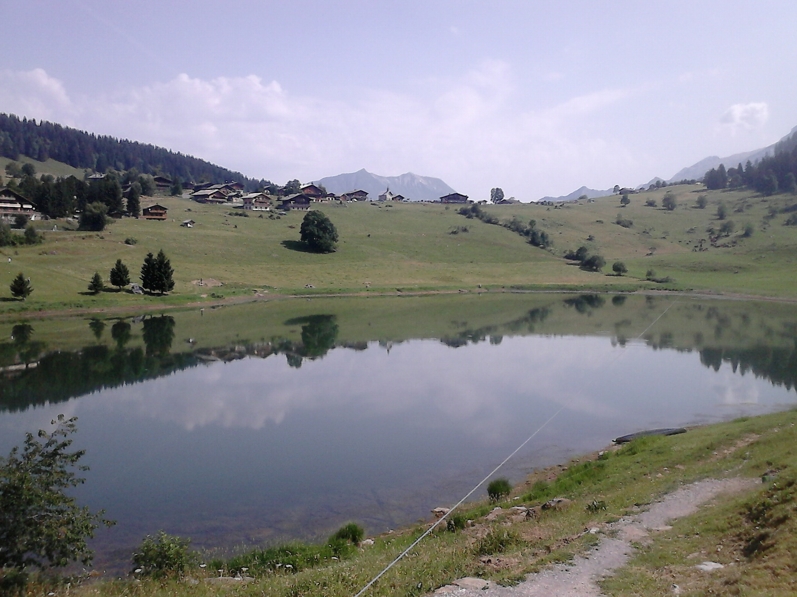
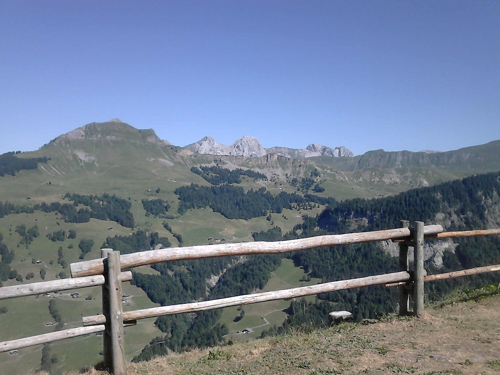

!doctype> 
<html>
<head>
<meta charset="utf-8">	
<meta http-equiv="Content-Language" content="fr">
<link rel="stylesheet" type="text/css" href="reset.css">
<meta name content>
<meta name="ProgId" content="FrontPage.Editor.Document">
<meta name="GENERATOR" content="Microsoft FrontPage Express 2.0">
<title>pralognan.htm</title>
<body bgcolor="#C0d9d9"></body>
<base target="top">
</head>

<center>
	<h1>Quelques images des Alpes</h1></center>






 <br>
<body bgcolor="black" text="#0000FF" topmargin="0"leftmargin="70">
<section id="services">
	<center>
<font face="bradley hand itc">
<a href="index.htm"><font size="7" face="bradley hand itc">*Menu Varié*</a>
<a href="index2.html"><font size="7" face="bradley hand itc">*Locronan*</font></a>
</section>
</body>
</html>
